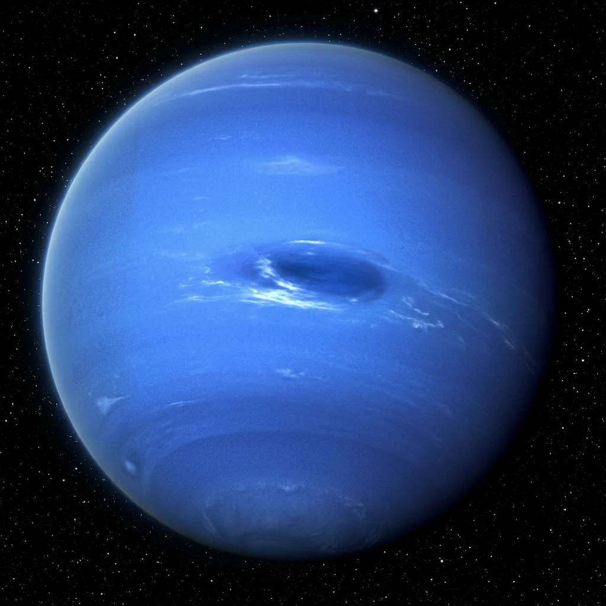

Foundational STEAM lesson for Neptune.
Neptune is the eighth and most distant major planet in our solar system, orbiting 30 times further from the Sun than Earth. Despite receiving very little solar heat, it hosts the fastest atmospheric winds in the solar system, clocking supersonic speeds up to 2,100 km/h (1,300 mph).
